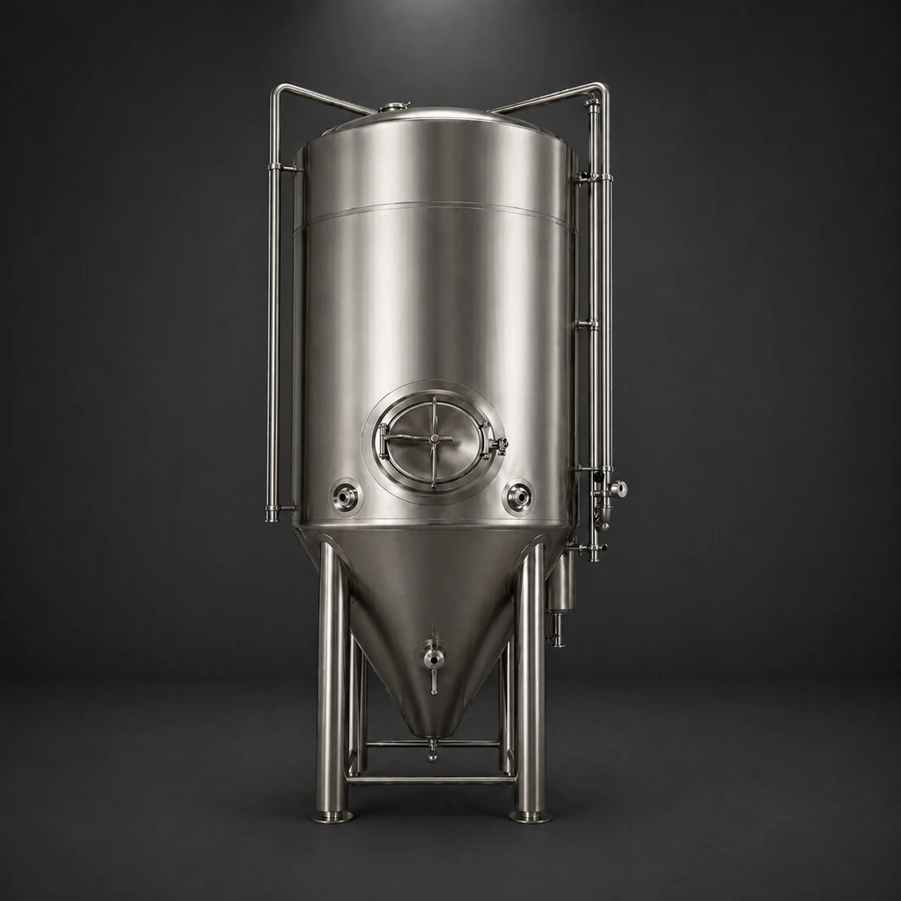
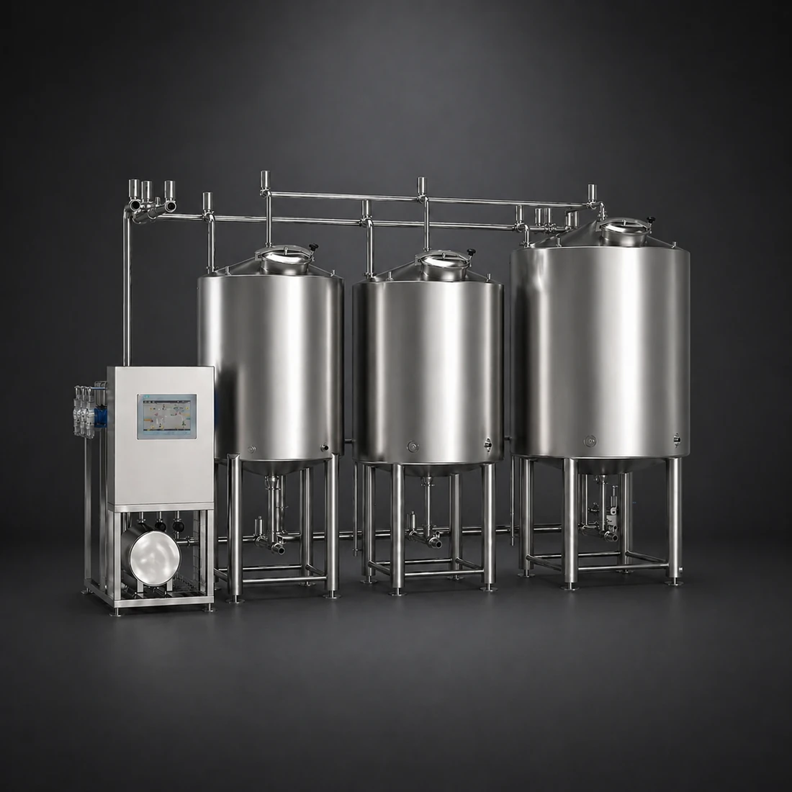
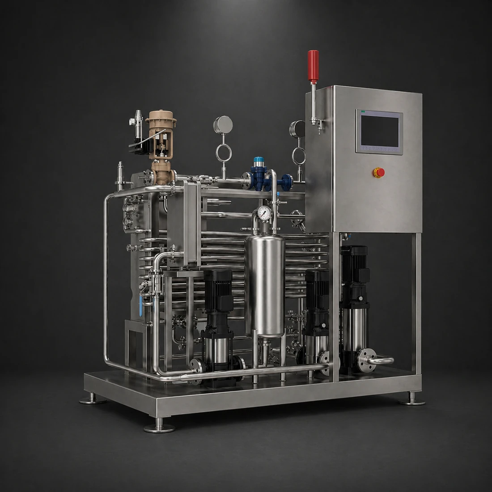
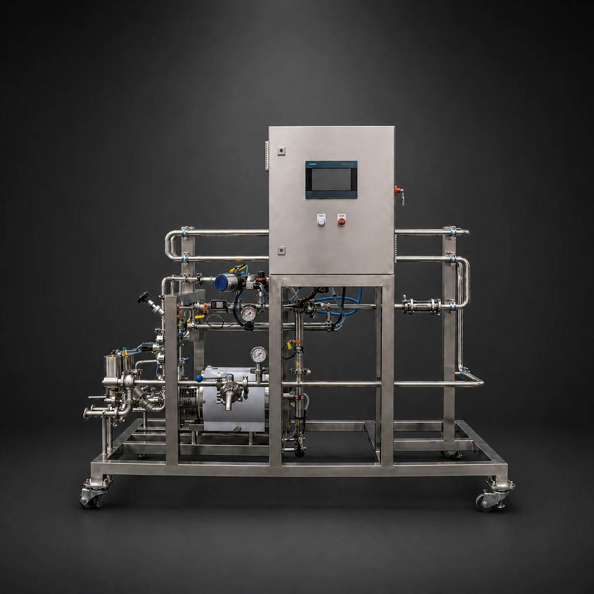
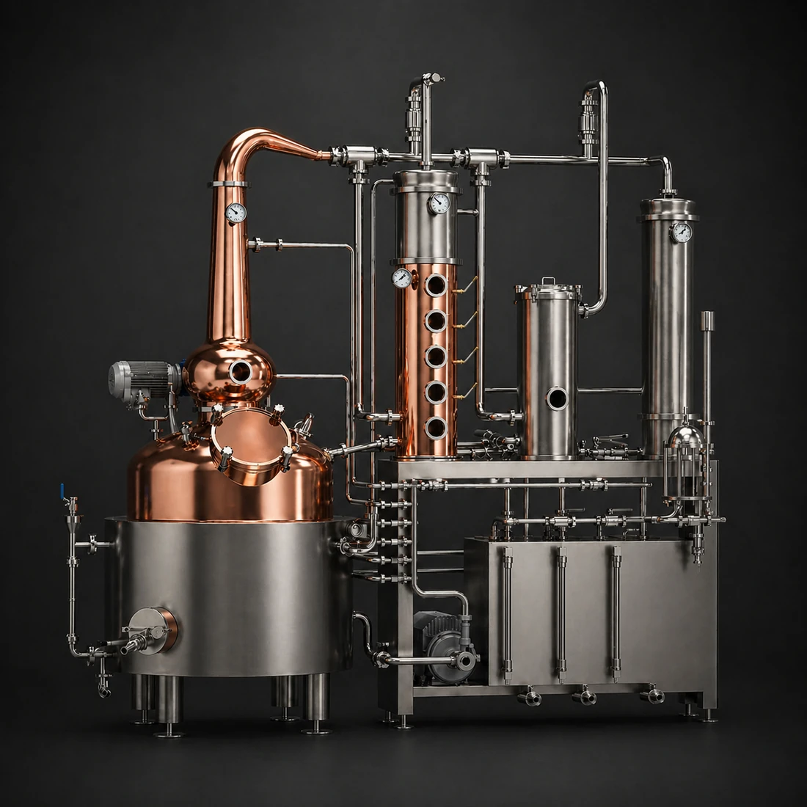

SKY TECH
End-to-End
Brewing Equipment
Built-to-order brewhouse, cellar and processing systems, engineered to your layout and supplied with the documentation required to install and commission without rework.
Brewing Equipment
Designed Around
Your Brewery
From brewhouses to cellar tanks and utilities, we support new installations, upgrades, and expansions. All equipment is built to order and specified to suit your process, space, and production targets. We work from initial specification through to delivery and ongoing support, ensuring each system is properly defined and integrated into your brewery.
Our team covers capacity planning, vessel sizing, and layout optimisation, aligning each system with how your brewery operates in practice. Coordinated manufacturing, clear lead times, and structured delivery keep projects on track, with equipment performing as expected from day one and beyond.
Our Equipment Solutions
-

Brewhouses
Turnkey brewhouse options for pilot, brewpub, craft and industrial brewing operations.
-

Tanks
Fermentation and conditioning vessels for controlled fermentation, carbonation and storage across the cellar.
-

CIP
Clean-in-place systems for cleaning vessels and pipework without disassembly, from single-unit to multi-circuit setups.
-

Pasteurisation
Batch and inline pasteurisation systems for stabilising packaged or process product.
-

Water Treatment
Water preparation systems supporting consistent supply, high-gravity brewing and process efficiency.
-

Blending & Carbonation
Inline systems for blending liquid streams and dosing CO₂ or N₂ under controlled flow conditions.
-

Dealcoholiser
Membrane-based systems for reducing alcohol content while retaining the base product profile.
-

Keg Equipment
Keg washing and filling systems for cleaning, sanitising and filling under controlled conditions.
-

Kombucha
Commercial kombucha systems for controlled fermentation, carbonation and packaged product production.
-

Distilling
Pot and column distillation systems for controlled separation, spirit production and alcohol recovery.
-

Coffee
Cold extraction systems for consistent, low-acidity coffee production at commercial scale.
-

Additional Equipment
Supporting equipment for material handling, yeast management and practical brewhouse and cellar operations.